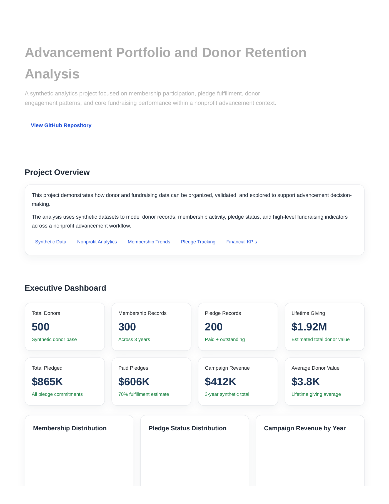
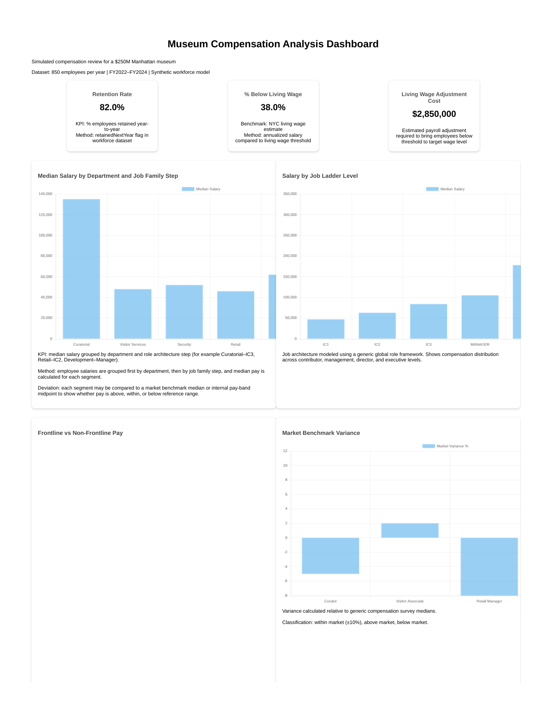
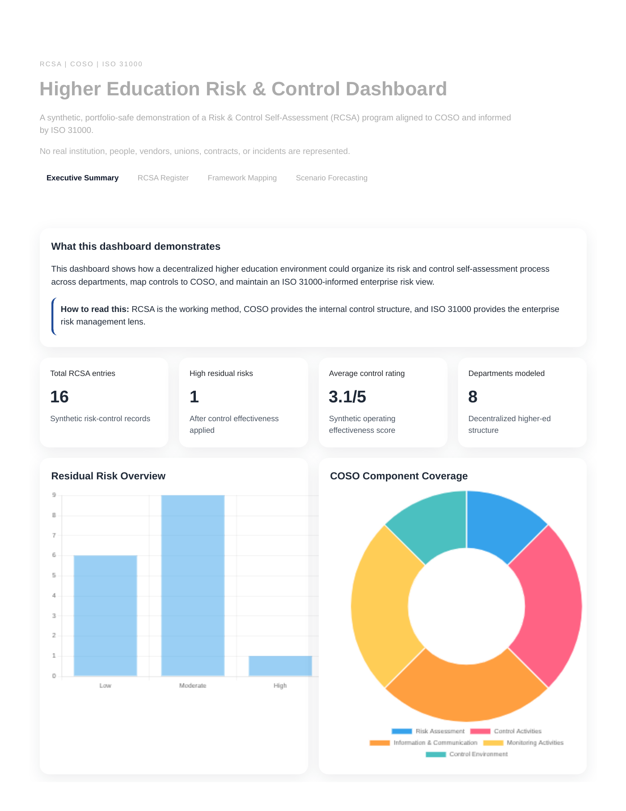
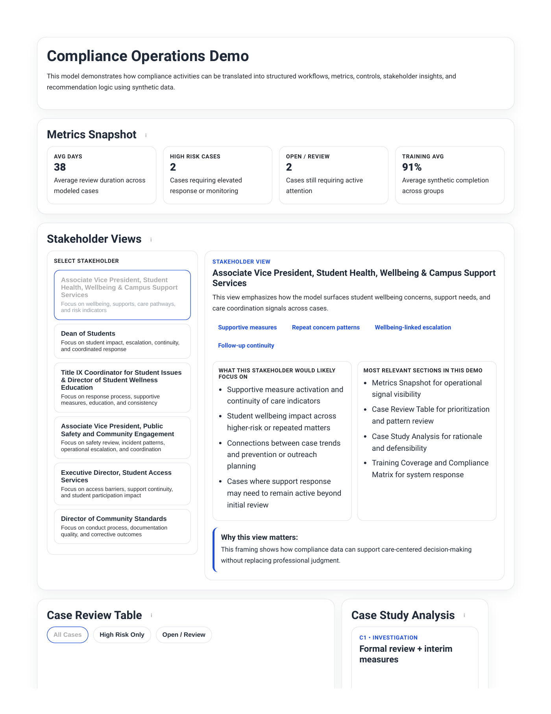
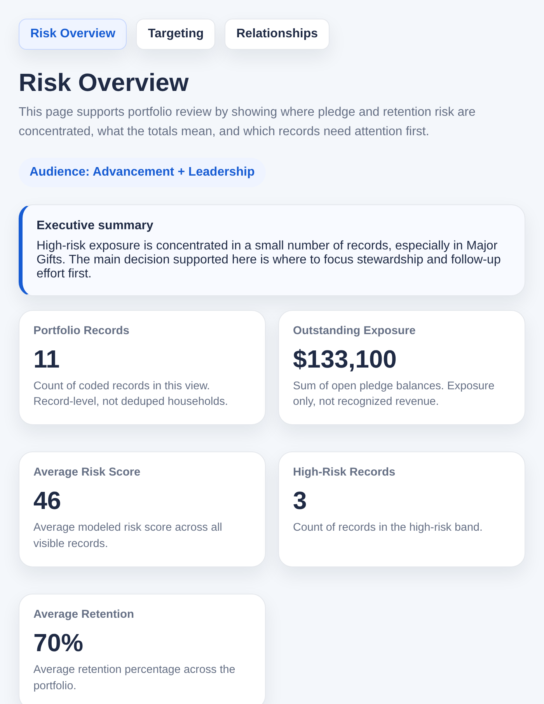
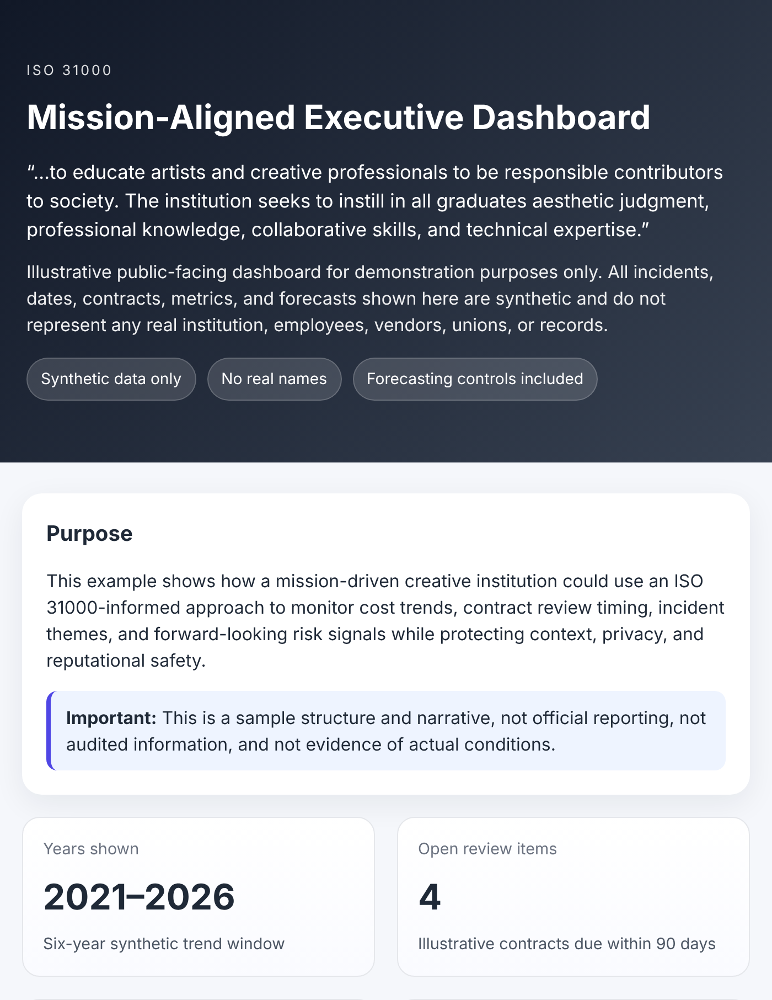
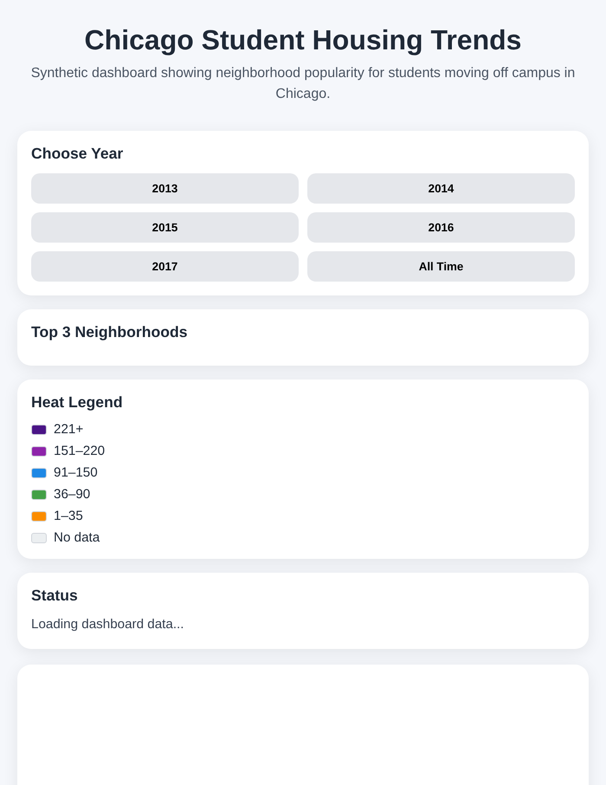
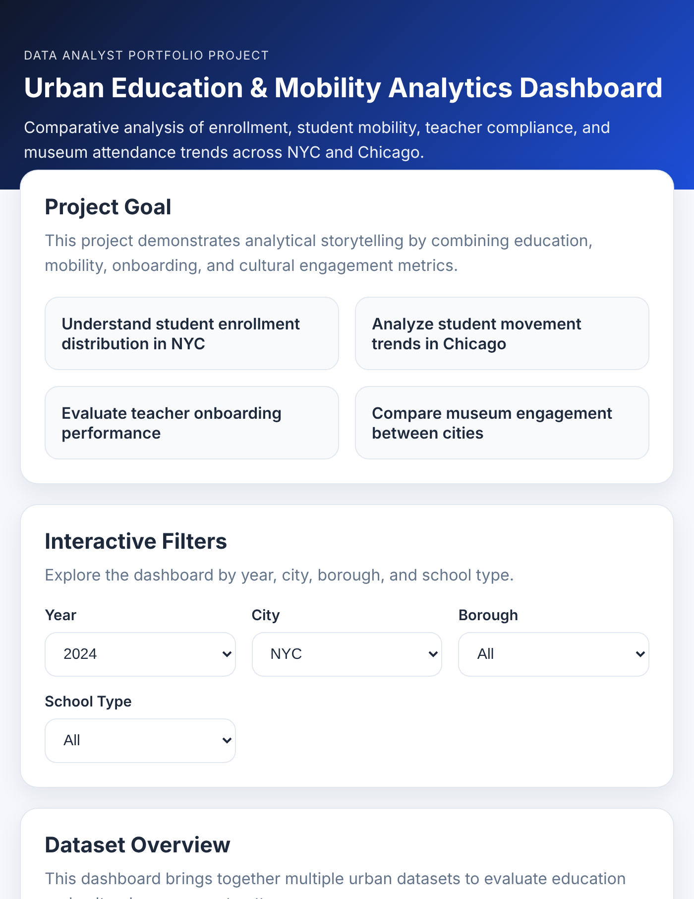
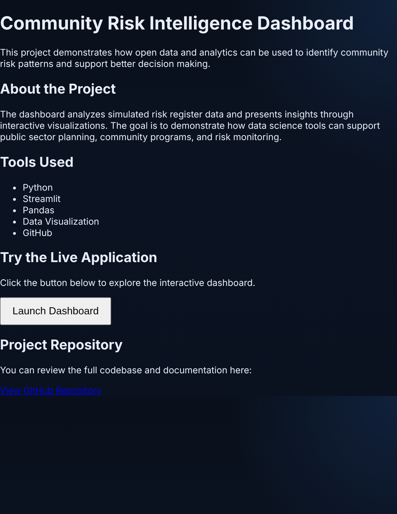
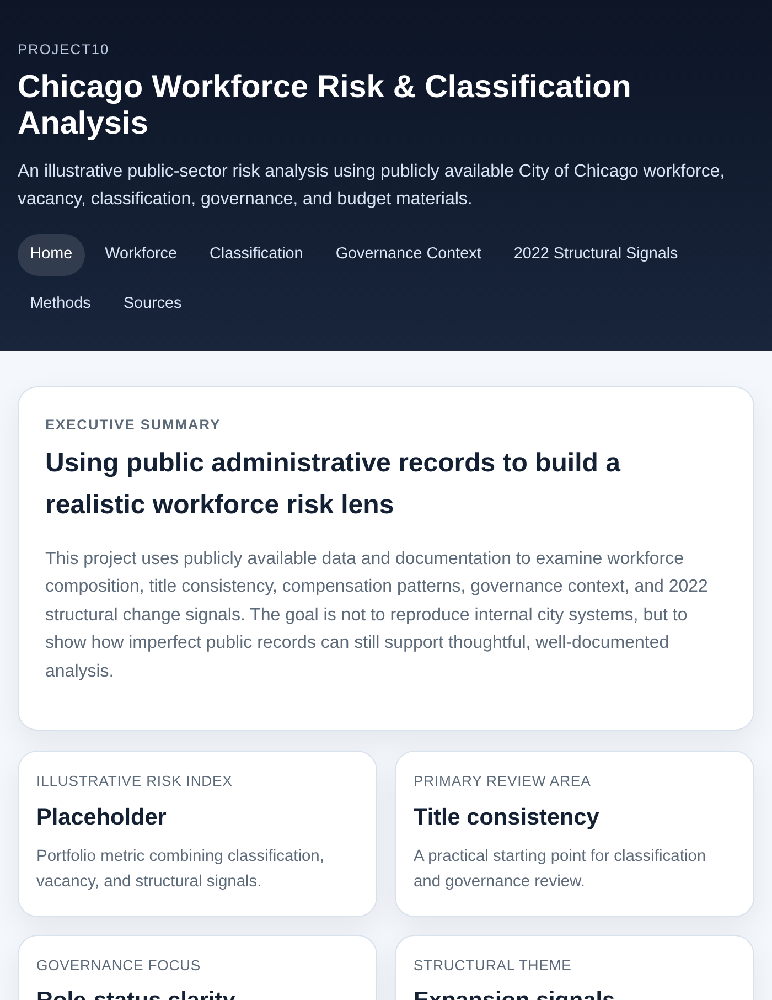

Selected portfolio
Work built to make complexity usable.
These projects use synthetic or public data to demonstrate how I frame questions, organize evidence, and translate analysis into practical decision support.

Advancement
Portfolio and Donor Retention Analysis
Segmentation, retention patterns, and portfolio prioritization.

Workforce
Museum Compensation Dashboard
Compensation patterns, internal equity, and workforce context.

Enterprise risk
Higher Education ERM Dashboard
RCSA methodology aligned with COSO and ISO 31000 concepts.

Compliance operations
Compliance Workflow Model
Controls, ownership, evidence, and escalation translated into a usable workflow.

Advancement risk
Advancement Credit Risk Dashboard
Pledge fulfillment risk, retention signals, and stewardship priorities.

Executive reporting
Mission-Aligned Executive Dashboard
ISO 31000-informed view of costs, contracts, incidents, and forward risk.

Student services
Chicago Student Housing Trends
Neighborhood popularity and off-campus movement mapped over time.

Education analytics
Urban Education & Mobility Analytics
Enrollment, mobility, teacher onboarding, and museum engagement across NYC and Chicago.

Public-sector risk
Community Risk Intelligence Dashboard
Simulated risk register turned into community planning signals.

Workforce risk
Chicago Workforce Risk & Classification
Public workforce records used to examine classification, vacancy, and governance signals.
More work
Explore the full project library.
Additional analytics, risk, education, and financial projects are available in my GitHub profile.
Visit GitHub ↗